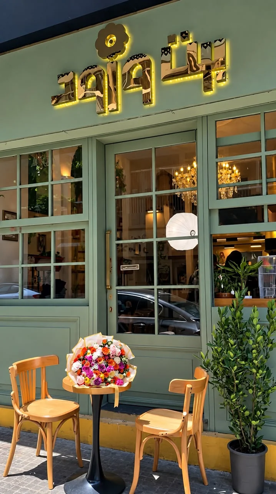

FLOWER BOUTIQUE & CAFÉ
BEIT WURUD
Where Coffee
Meets Flowers
Fresh flowers, a cup of coffee, and a place to slow down. Welcome to Beit Wurud.
Discover Beit Wurud
FRESH FLOWERSCOFFEE & MOREOUR SPACE
THE FLOWER COLLECTION
Our Flowers & Gifts


WELCOME INSIDE
Our Space
Warm light, fresh flowers and inviting corners.
A closer look inside Beit Wurud.
COFFEE & FLOWERS
The café
at Beit Wurud
Take a seat among the flowers. Explore our selection of hot and cold drinks, desserts and café food, all in one welcoming space.
Explore Our Café Menu